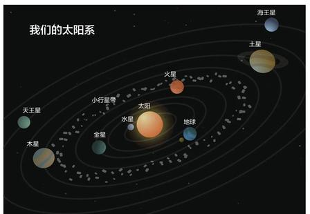
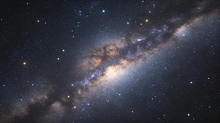
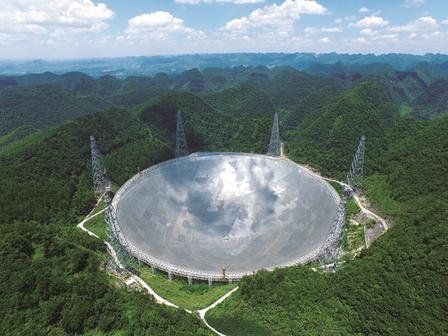

天文学基础介绍
这是一个关于天文科普的页面
定义
- 天文学是研究天体、宇宙的空间结构与演化规律的自然科学，研究对象包括行星、恒星、星云、星系以及宇宙整体。
太阳系
- 组成：太阳系由太阳、八大行星、卫星、小行星、彗星等天体组成。

- 能量来源：太阳内部持续发生氢‑氦核聚变，向外释放能量。
- 运行规律：各大行星在引力作用下沿椭圆轨道绕太阳公转，地球位于宜居带，具备生命存续的环境。
恒星与星系
- 恒星依靠内部核聚变产生光和热，生命周期从星云坍缩开始，最终演变为白矮星、中子星或黑洞。
- 星系由大量恒星、星际物质、暗物质构成，银河系是我们所处的棒旋星系。

国内重大项目
- 项目设备：FAST射电望远镜、巡天空间望远镜。

- 研究方向：脉冲星探测、星系演化、宇宙大尺度结构等方向的观测研究。
学科价值
- 理论层面：天文学用于检验基础物理理论。
- 应用层面：为航天、卫星导航等工程领域提供基础数据。
参考链接